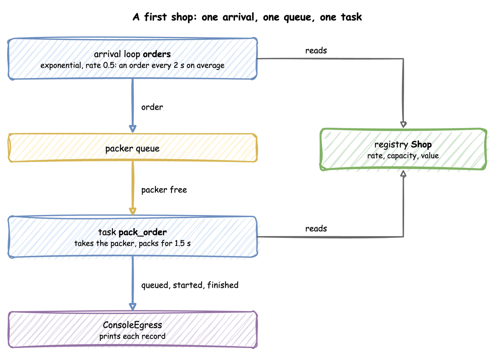
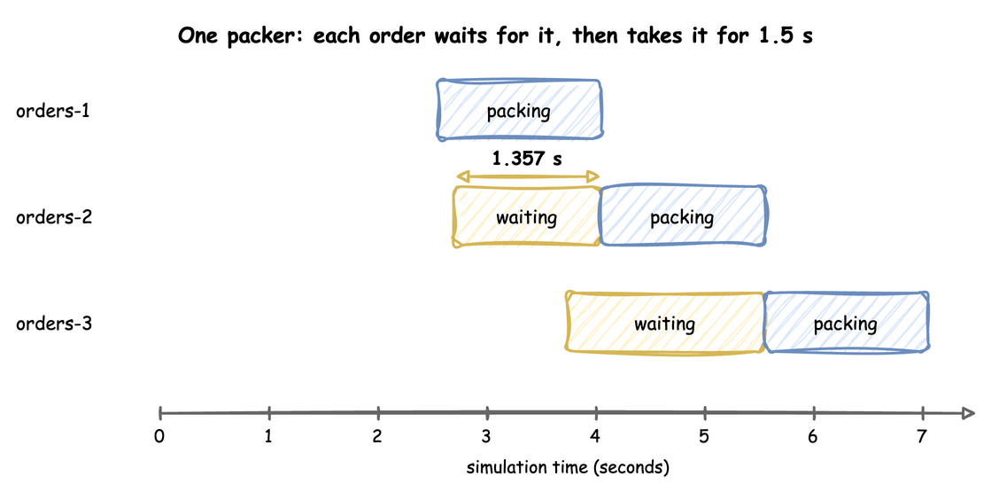

First Simulation
This tutorial models a shop that receives and packs customer orders: one packer, an order every 2 seconds on average, and 1.5 seconds of packing per order. It answers one question: how long does an order wait with one packer?
- Decision: how many packers the shop needs, which later pages decide.
- Measures: the wait of each order, from the moment it joins the queue to the moment packing starts.
- Runs: one run of the first 20 seconds, with the seed 42.
- Assumptions: orders arrive at random, and every order takes exactly the same time to pack.
What You Will Learn
This page shows how to:
- describe a model as an arrival, a resource and a service time, in YAML, the builder or the low-level API;
- run it and read the event records it prints;
- read an order's wait from its
queuedandstartedevents.
What You Add
This page builds the first model of the shop: a simulation called Shop with an orders arrival, a packers resource with one unit, a packing service and a pack_order task, and a sink that prints each record. The following pages extend the same model, one idea per page.
Each step shows the code three ways, in tabs: a YAML blueprint, the Builder (SimulationContext) and the Low-level API (DynamicRealtimeEnvironment and SimPy processes). Choose the tab for your preferred API; all code tabs on the site switch to that API. The three build the same simulation and print the same records. Writing a Model explains how they relate.
Look at the order of the parts: orders arrive, wait in the packer queue and take the packer for 1.5 seconds. The simulation prints a record of each step to the console. The arrival loop and the task read their values from the registry. The steps below explain each of these parts.

Install
Install the core package, which includes the desflow command, as Installation shows.
A blueprint needs only the desflow command. Install it with one of these forms, then run the file:
A builder model is a Python file, so the Python that runs it must be able to import desflow. uv tool install desflow installs the command only. Run the file with one of these forms:
The pages that follow show the plain python <file>.py form. Run it with whichever form above you use.
A low-level model is a Python file, so the Python that runs it must be able to import desflow. uv tool install desflow installs the command only. Run the file with one of these forms:
The pages that follow show the plain python <file>.py form. Run it with whichever form above you use.
Describe the Shop
In discrete-event simulation (DES), an entity is a thing that moves through the model, here an order. A resource is what an entity needs and may have to wait for, here the packer. A service time is how long an entity holds the resource, and an arrival process sets when entities appear.
In desflow, these are parameters of one simulation. Its name, the sim_id, is Shop here. The shop has a resource called packers with one unit, a service called packing, and an arrival stream called orders.
| docs/snippets/tutorials/first_shop_low_level.py:shop | |
|---|---|
Packing is constant, so every order takes 1.5 seconds and only the arrivals are random. The gaps between orders are drawn from an exponential distribution with a mean of 2 seconds (30 orders a minute on average), rate: 0.5. The seed makes those draws the same on every run, so your trace matches the one below; Randomness and Seeds explains it.
The registry holds the model's live values: the settings that can change while the simulation runs. Each value has a path, such as Shop.arrival.orders.rate or Shop.resources.packers.current_cap. A scenario, or a message from outside the simulation, changes a value through its path, and the run goes on with the new value. Live Changes does it on the shop, and Live Parameters explains how.
Say What an Order Does
In DES terms an order queues for the packer, seizes it when it is free, is delayed for the service time, and releases the packer. desflow calls this a task. A task publishes three events: queued when the order joins the queue for the packer, started when the packer starts on it, and a finished event when packing ends. The value of the finished event is the task's payload.
| docs/snippets/yaml/first_shop.yaml:order | |
|---|---|
spawn: pack_order on the arrival, in the step above, starts the task for every order.
@app.task publishes the three events and handles the packer for you. The arrival loop waits for each arrival and starts one pack_order for the order it returns.
These are SimPy constructs. pack_order is a process: a generator function that the environment runs, pausing at each yield until the event it yielded happens. env.timeout(...) is an event that happens after a delay. packers.request() is an event that happens when a packer is free, and leaving the with block releases the packer. env.process(...) starts a process. SimPy and desflow describes what desflow adds to them.
Print the Records
A sink, called an egress, receives every record the simulation publishes. ConsoleEgress prints them; Egress lists the others.
Every event record carries the order's key, orders-1 for the first order, so all the events of one order can be found together. task names the task, and instance counts the task's runs from 0. Records and Telemetry describes every field.
Run It
| docs/snippets/yaml/first_shop.yaml:run | |
|---|---|
Save the files from Full Files in one folder and run the commands there. desflow examples downloads separate examples, not the files of these tutorial pages.
Start it from a terminal:
At factor: 1.0 one simulated second takes one real second. The run stops at simulation time 20 (until: 20), so it takes 20 real seconds. Each record is one line: [EVT] lines are events, and [TEL] lines are telemetry. The only telemetry here is system.simulation.lag_seconds, published once per simulation second, which says how far the run is behind the wall clock. These are the events of the first 6 seconds:
Read sim_ts, the simulation time of each record. It does not count up in small steps: it jumps from 2.552 to 2.696, then to 3.737, 4.02 and 4.052. The simulation clock moves straight to the time of the next event, because nothing changes between two events. At factor: 0 the same run takes a fraction of a second, with the same records.
--sample 5 shows the first records without waiting and without changing the file. It runs the blueprint unpaced, as fast as it can, prints its first 5 events to stdout as JSON lines (one record per line), and stops:
They are the first five events above, each printed as the whole record, with its stream_type. The run's log stays on stderr, so a pipe such as | jq .key reads only the records. YAML Blueprints lists the other ways to run a blueprint.
While you edit the file, desflow run first_shop.yaml --sample 5 --watch runs it again each time the file changes. --watch needs the watch extra: pip install "desflow[watch]", or uv tool install "desflow[watch]" for the command.
desflow check first_shop.yaml loads the file and reports its mistakes without running it, which is cheaper than finding them after a long run. It prints ok and the sim_id for a valid file.
desflow on its own lists every command, grouped by what it does, with examples. desflow run --help lists the options of run, also with examples. Command Line uses every command on one shop.
Test the Model
A blueprint can hold the answers you expect from it. A tests entry names a seed and an end time (both default to the file's own) and the statistics the run must give. desflow test runs each entry once, unpaced and with no sink, so it contacts no service, and reports each statistic that differs:
A builder file reads its tests from a tests.yaml in the same folder, with the same entries.
A low-level script has no desflow test. Test a Model tests it with pytest.
Nine orders are packed in the first 20 seconds with the seed 42. A number is compared exactly. {value: 9, within: 1} allows a difference. The seed and the desflow version are part of the answer: after an upgrade, desflow test --fix writes the new numbers, and you read them before you keep them. Test a Model shows more.
What You Get and Why
How long does an order wait with one packer? It depends on how many orders are ahead of it, as the same records on a timeline show: each order waits (yellow) until the packer is free, then holds it for 1.5 seconds of packing (blue).

These records come from one run of the first 20 seconds, with the seed 42. orders-1 finds the packer free, so its queued and started events have the same time. orders-2 is the first order that has to wait: it is queued at 2.696 and started at 4.052, when orders-1 finishes. It waits 1.357 seconds. orders-3 arrives while orders-2 is waiting and waits longer, 1.815 seconds, because two orders are ahead of it.
So with one packer, an order that arrives while the packer is busy waits until every order ahead of it has been packed. The wait depends on when orders happen to arrive, which is why the next pages measure it over many orders.
A discrete-event simulation keeps a list of future events, ordered by time. It takes the earliest one, moves the clock to its time, and runs what it triggers, which may add new events to the list: an arrival schedules the next arrival, and a start of packing schedules its end 1.5 seconds later. The trace above is that list, read in order. What Is DES? explains the event list in more detail.
Key Takeaways
- A model has entities that arrive, resources they wait for, and service times that hold them. desflow calls the work an entity does a task.
- A task publishes
queued,startedand a finished event, and an order's wait is itsstartedtime minus itsqueuedtime. - The simulation clock jumps from one event to the next, so a run gives the same records at any pace.
Full Files
Full files
The complete first shop, which the documentation tests run: